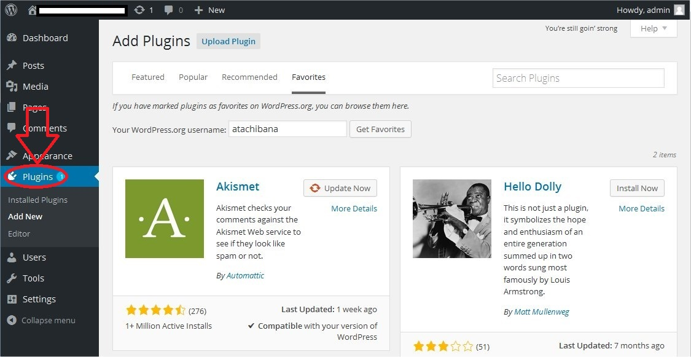
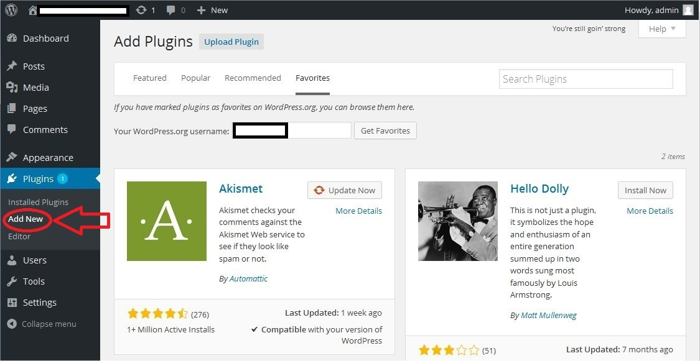
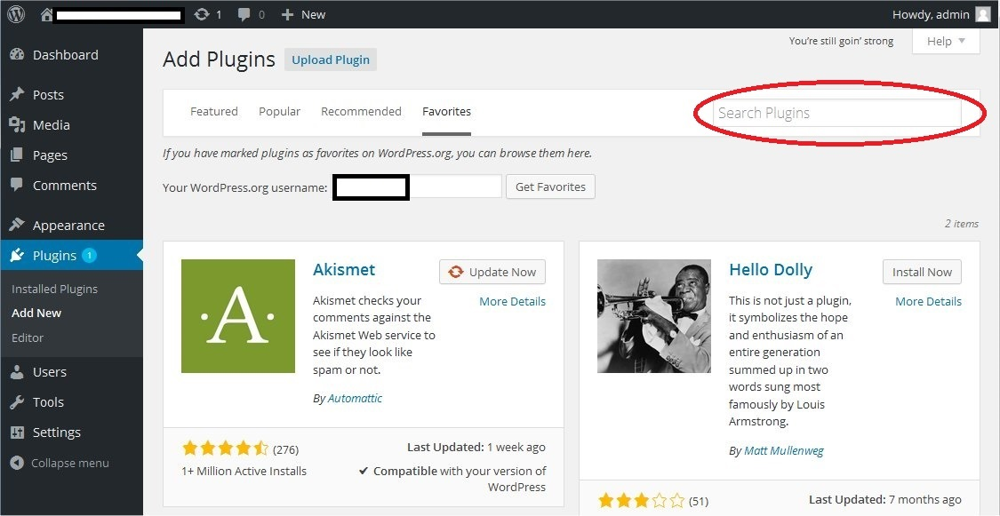
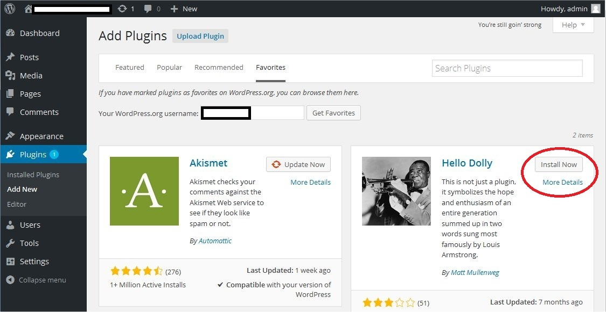
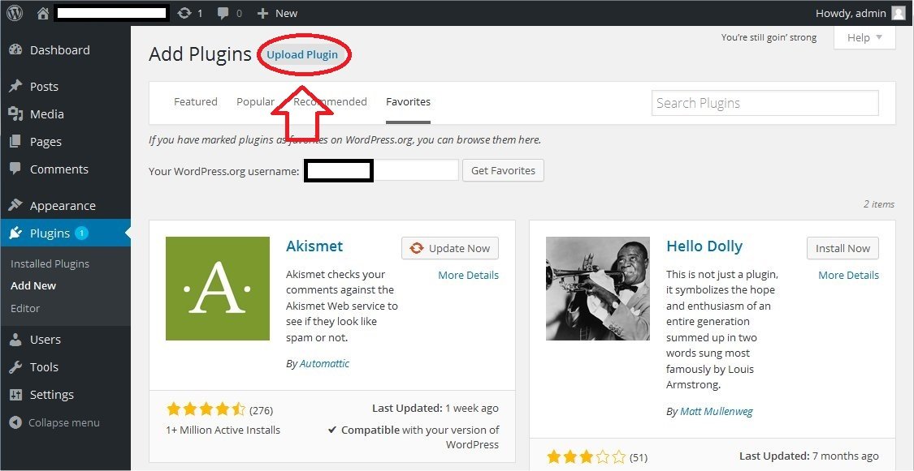
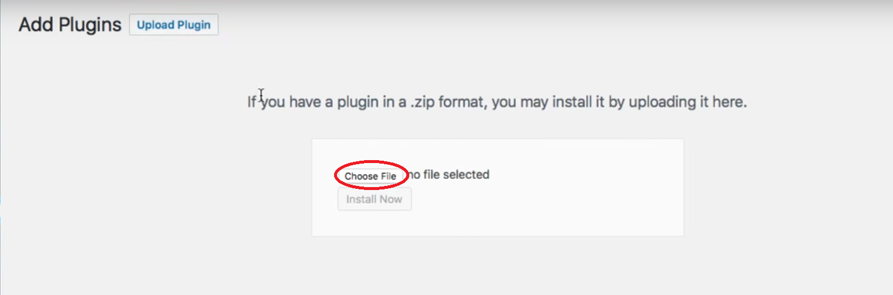
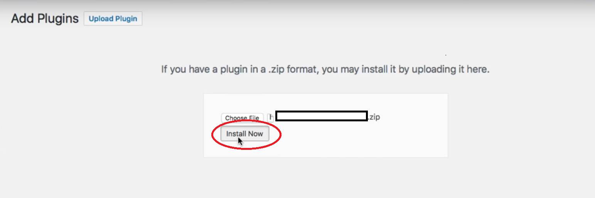

WordPress plugins are pieces of software that can add functionality to your website. These can range from analytics, to making contact from users easier, to adding Search Engine Optimization markers to your site. Having the correct plugings for your site can make a significant difference in growing your online prescence. There are a number of ways of installing useful plugins to your WordPress website - here's a quick rundown of the most common methods.
WordPress has a built-in installer that allows you to search for, update and install plugins. This is often the easiest way to install plugins to your website..
1. First, click the Plugins option in the sidebar
2. Next, select the Add New> from the drop-down options
3. You can use the search bar by typing in the name, author name or a keyword of the plugin you want.
4. Finally, you can now either click the Install button to install the plugin you want, or click the "More Details" link to see more information about the plugin.
Automatic plugin installation is not the only way to install a plugin, they can also be installed manually by directly uploading a plugin zip file to WordPress.
1. The first couple of steps are very similar to automatic installation. Begin by clicking the "Plugins" option in the sidebar.
2. Next, select the Add New from the drop-down options
3. Click the Upload plugin button
4. Click the Choose File button and select the plugin zip file from your local machine
5. Click the Install Now button to install the selected plugin
6.Finally, if the upload was successful, you can click